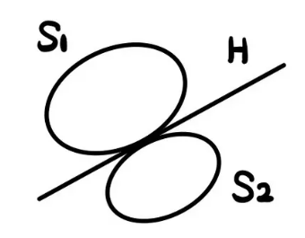
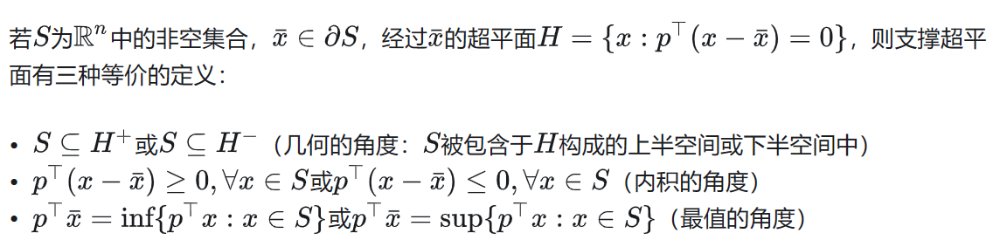
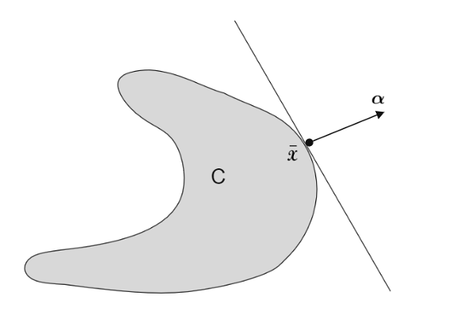
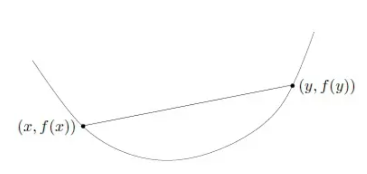
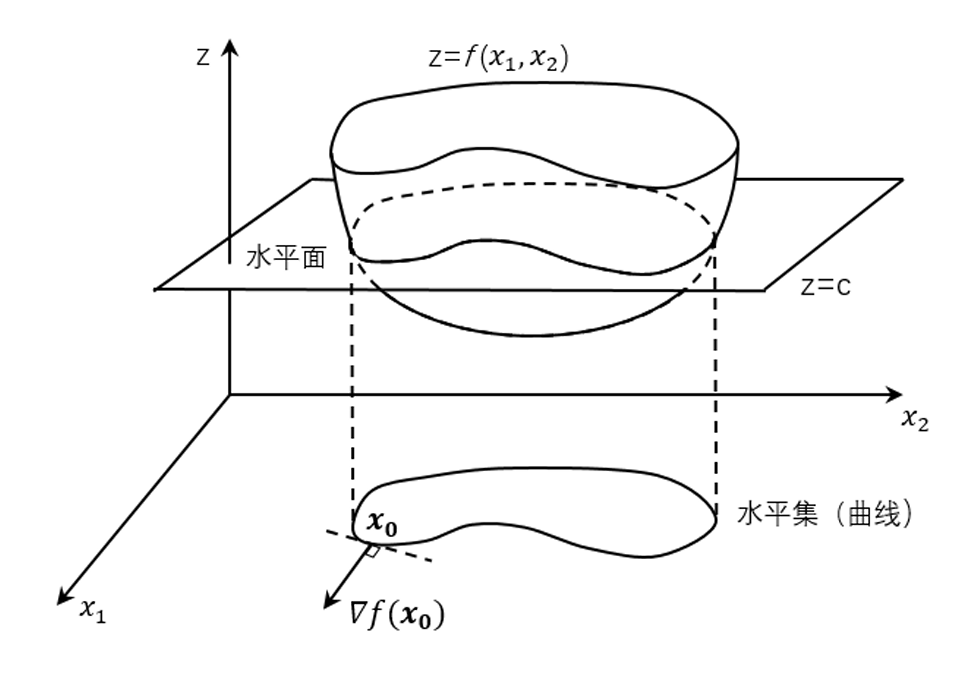
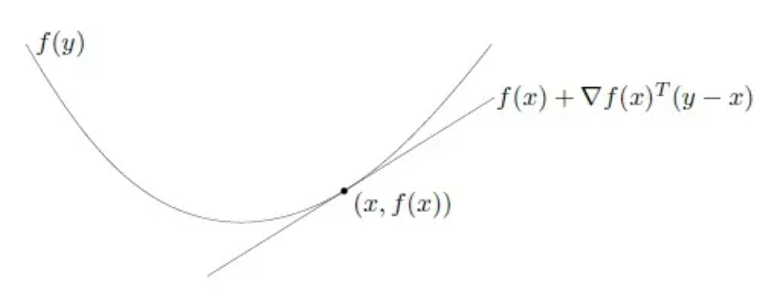

凸集和凸函数基础知识
凸集和凸函数
今天是春分，春分快乐~
$——$ 谁把春光，平分一半，最惜今朝。
1. 凸集
1.1 凸集的定义
设集合 $\boldsymbol{D} \subset \mathbb{R}^n$ ，如果对于任意的 $\boldsymbol{x}, \boldsymbol{y} \in \boldsymbol{D}$ 与任意的 $\alpha \in[0,1]$,有 $\alpha \boldsymbol{x}+(1-\alpha) \boldsymbol{y} \in \boldsymbol{D}$ ，则称 $\boldsymbol{D}$ 是凸集（$convex \quad set$）。
凸集的几何意义是：如果两个点属于此集合，则这两点连线上的 任意一点均属于此集合。
定义推广：$\boldsymbol{D}$ 是凸集的充分必要条件是：
对任意$\forall m \geqslant 2, \forall \boldsymbol{x}_1, \boldsymbol{x}_2, \cdots, \boldsymbol{x}_m \in \boldsymbol{D}, \forall \alpha_1, \alpha_2, \cdots, \alpha_m$ ，其中 $\alpha_i \geqslant 0$ $(i=1,2,\cdots,m)$ 且 $\sum_{i=1}^m \alpha_i = 1$ ，均有：
1.2 凸集的性质
设 $\boldsymbol{D}_1, \boldsymbol{D}_2 \subset \mathbb{R}^n$ 是凸集， $\alpha \in \mathbb{R}$ ，则有：
- $\boldsymbol{D}_1 \cap \boldsymbol{D}_2=\left\{\boldsymbol{x} \mid \boldsymbol{x} \in \boldsymbol{D}_1, \boldsymbol{x} \in \boldsymbol{D}_2\right\}$ 是凸集。
- $\alpha \boldsymbol{D}_1=\left\{\alpha \boldsymbol{x} \mid \boldsymbol{x} \in \boldsymbol{D}_1\right\}$ 是凸集。
- $\boldsymbol{D}_1+\boldsymbol{D}_2=\left\{\boldsymbol{x}+\boldsymbol{y} \mid \boldsymbol{x} \in \boldsymbol{D}_1, \boldsymbol{y} \in \boldsymbol{D}_2\right\}$ 是凸集。
- $\boldsymbol{D}_1-\boldsymbol{D}_2=\left\{\boldsymbol{x}-\boldsymbol{y} \mid \boldsymbol{x} \in \boldsymbol{D}_1, \boldsymbol{y} \in \boldsymbol{D}_2\right\}$ 是凸集。
注意：这里要明确一点凸集的加减法和集合中的加减法完全是两件事情，比如说即使 $\boldsymbol{D}_1=\boldsymbol{D}_2$ ，那么 $\boldsymbol{D}_1-\boldsymbol{D}_2 \neq \varnothing$ ，甚至结果的测度要比原来的 $\boldsymbol{D}_1$ 更大。给出其中一个性质的证明有利于更好地理解凸集加减法的运算：
证明：设 $\boldsymbol{D}_1, \boldsymbol{D}_2 \subset \mathbb{R}^n$ 是凸集，则 $\boldsymbol{D}_1 + \boldsymbol{D}_2=\left\{\boldsymbol{x}+\boldsymbol{y} \mid \boldsymbol{x} \in \boldsymbol{D}_1, \boldsymbol{y} \in \boldsymbol{D}_2\right\}$ 也是凸集。
不妨设：$\boldsymbol{D}_1 + \boldsymbol{D}_2 = \boldsymbol{Z} $ ，任取 $\boldsymbol{z}\in \boldsymbol{Z}, \boldsymbol{z}’\in \boldsymbol{Z}$ ，则有：
其中 $\boldsymbol{x}, \boldsymbol{x}’\in \boldsymbol{D_1}; \boldsymbol{y},\boldsymbol{y}’ \in \boldsymbol{D_2}$
所以对于任意 $\alpha \in [0,1]$ 有：$\alpha\boldsymbol{z} + (1-\alpha)\boldsymbol{z’} = \alpha(\boldsymbol{x}+\boldsymbol{y})+(1-\alpha)(\boldsymbol{x’}+\boldsymbol{y’})=\alpha\boldsymbol{x}+(1-\alpha)\boldsymbol{x’}+\alpha\boldsymbol{y}+(1-\alpha)\boldsymbol{y’}$
而 $\alpha\boldsymbol{x}+(1-\alpha)\boldsymbol{x’}\in \boldsymbol{D_1}$ ， $\alpha\boldsymbol{y}+(1-\alpha)\boldsymbol{y’}\in \boldsymbol{D_2}$。
所以：$\alpha\boldsymbol{z}+(1-\alpha)\boldsymbol{z’}\in \boldsymbol{D_1} + \boldsymbol{D_2} = \boldsymbol{Z}$ 。
1.3 内点、边界、闭包
内点：给定 $\boldsymbol{D} \subset \mathbb{R}^n, \boldsymbol{x} \in \mathbb{R}^n$ 。若存在 $\boldsymbol{x}$ 的 $\delta$ 邻域 $N_\delta(\boldsymbol{x})=\{\boldsymbol{y} \mid|\boldsymbol{y}-\boldsymbol{x}|<\delta\} \subset$ $D$ ，则称 $x$ 为 $D$ 的内点; 所有内点组合成的集合记为 $i n t D$ 。
边界：若 $\boldsymbol{x}$ 的任意 $\delta$ 邻域 $N_\delta(\boldsymbol{x}$ )既包含 $\boldsymbol{D}$ 中的点, 又包含不属于 $\boldsymbol{D}$ 的点, 则称 $x$ 为 $D$ 的边界点; 所有边界点组成的集合记为 $\partial \boldsymbol{D}$ 。
闭包：若对任意 $\delta>0$ 均有 $N_\delta(\boldsymbol{x}) \cap \boldsymbol{D} \neq \varnothing$, 则称 $\boldsymbol{x}$ 属于集合的闭包, 记为 $x \in c l D$ 。
根据以上定义可知，集合 $\boldsymbol{D}$ 的闭包 $c \boldsymbol{D}=\boldsymbol{D} \cup \partial \boldsymbol{D}$, 它是包含集合 $\boldsymbol{D}$ 的最小的闭集。
2. 投影定理
设 $\boldsymbol{D} \subset \mathbb{R}^n$ 是非空闭凸集, $\boldsymbol{y} \in \mathbb{R}^n$ 且 $\boldsymbol{y} \notin \boldsymbol{D}$, 则
(1) 存在唯一的一点 $\overline{\boldsymbol{x}} \in D$, 使得 $\overline{\boldsymbol{x}} \in D$ 是 $\boldsymbol{y}$ 到 $D$ 的距离最小的点（距离大于 0 ），即有 ：(2) $\overline{\boldsymbol{x}} \in \boldsymbol{D}$ 是 $\boldsymbol{y}$ 到 $\boldsymbol{D}$ 的距离最小的点的充要条件是 $(\boldsymbol{x}-\overline{\boldsymbol{x}})^T(\overline{\boldsymbol{x}}-\boldsymbol{y}) \geqslant$ $0, \forall \boldsymbol{x} \in \boldsymbol{D}$
3. 凸集的分离定理
先回顾一下什么是超平面(Hyperplane)，超平面指的是比所处空间少一个维度的子空间。超平面$H$的方程如下：
也可以写成：在超平面$H$内一点 $\boldsymbol{a}$ 和任一点 $\boldsymbol{x}$。 $\boldsymbol{u}$ 为点 $\boldsymbol{x}$ 处的法向量，将满足 $\boldsymbol{u^T}(\boldsymbol{x}-\boldsymbol{a})=0$ 于是有：
若 $\boldsymbol{u}^T \boldsymbol{x}\geq v$ 则表明点 $\boldsymbol{x}$ 在超平面$H$的正面，若$\boldsymbol{u}^T \boldsymbol{x}\leq v$ 则表明点 $\boldsymbol{x}$ 在超平面 $H$ 的背面。
现在再给定两个集合 $S_1$ ，$S_2$，
如果 $\boldsymbol{u}^T \boldsymbol{x_1}\geq v$ ，$\forall \boldsymbol{x_1} \in S_1$ ； $\boldsymbol{u}^T \boldsymbol{x_1}\leq v$， $\forall \boldsymbol{x_2} \in S_2$ ,则称 $H$ 分离 $S_1$ 和 $S_2$。如下图所示：

图中超平面$H$的式子为$\boldsymbol{u}^T \boldsymbol{x_1}= v$，集合$S_1$中的任意点代入方程后都在正面(或面上)，集合$S_2$中的任意点代入方程后都在背面(或面上)，所以超平面$H$分离开了集合$S1$和$S_2$。
3.1 点和凸集的分离定理(基本分离定理)
定理设 $\boldsymbol{D} \subset \mathbb{R}^n$ 是非空闭凸集, $\boldsymbol{y} \in \mathbb{R}^n, \boldsymbol{y} \notin \boldsymbol{D}$, 则存在非零向量 $\boldsymbol{\alpha} \in \mathbb{R}^n, \beta \in \mathbb{R}$ 满足 $\boldsymbol{\alpha}^{\boldsymbol{T}} \boldsymbol{x} \leqslant \beta<\boldsymbol{\alpha}^{\boldsymbol{T}} \boldsymbol{y}, \forall \boldsymbol{x} \in \boldsymbol{D}$
这个定理表明如果在空间$\mathbb{R}^n$内存在一个凸集$\boldsymbol{D}$，凸集外有一点$\boldsymbol{y}$，那么可以找到一个超平面 $\boldsymbol{\alpha}^{\boldsymbol{T}} \boldsymbol{x}=\beta$ 将凸集$\boldsymbol{D}$和点$\boldsymbol{y}$分离开。
证明思路:
利用投影定理，在凸集中找到距离点$ \boldsymbol{y}$ 最近的点 $\overline{\boldsymbol{x}}$，然后做切平面(极限情况)，即可分离。
推论1设 $\boldsymbol{D} \subset \mathbb{R}^n$ 是非空凸集, $\boldsymbol{y} \in \partial \boldsymbol{D}$, 则存在非零向量 $\boldsymbol{\alpha} \in \mathbb{R}^n$ 满足 $\boldsymbol{\alpha}^T \boldsymbol{x} \leqslant \boldsymbol{\alpha}^T \boldsymbol{y}, \forall \boldsymbol{x} \in c l \boldsymbol{D}$
推论2设 $\boldsymbol{D} \subset \mathbb{R}^n$ 是非空凸集, $\boldsymbol{y} \notin \boldsymbol{D}$, 则存在非零向量 $\boldsymbol{\alpha} \in \mathbb{R}^n$ 满足 $\boldsymbol{\alpha}^T x \leqslant \boldsymbol{\alpha}^T \boldsymbol{y}, \forall \boldsymbol{x}\in c l \boldsymbol{D}$$c l$ 是闭包, $\partial$ 是边界。
3.2 支撑超平面定理
定理设 $\boldsymbol{D} \subset \mathbb{R}^n$ 是非空凸集, $\overline{\boldsymbol{x}} \in \partial \boldsymbol{D}$, 则存在非零向量 $\boldsymbol{\alpha} \in \mathbb{R}^n$, 使得 $\boldsymbol{\alpha}^T \boldsymbol{x} \leqslant \boldsymbol{\alpha}^T \overline{\boldsymbol{x}}, \forall \boldsymbol{x} \in c l \boldsymbol{D}$; 此时也称超平面 $\boldsymbol{H}=\left\{\boldsymbol{x} \in \mathbb{R}^n \mid \boldsymbol{\alpha}^T (\boldsymbol{x}-\overline{\boldsymbol{x}})=0\right\}$ 为集合 $\boldsymbol{D}$ 在 $\overline{\boldsymbol{x}}$ 处的支撑超平面。$c l$ 是闭包, $\partial$ 是边界。
从其他角度理解支撑超平面：

下图为一个示意图：

3.3 支撑分离定理(边界点与凸集的分离)
定理若 $S$ 为 $\mathbb{R}^n$ 中的非空凸集 (不需要为闭集)，令 $\overline{\boldsymbol{x}} \in \partial S$ ，则存在过点 $\overline{\boldsymbol{x}}$ 的 $S$ 的支撑超平面。
3.4 凸集和凸集的分离定理(超平面分离定理)
定理设 $\boldsymbol{D}_1, \boldsymbol{D}_2 \subset \mathbb{R}^n$ 是非空凸集，且 $\boldsymbol{D}_1 \cap \boldsymbol{D}_2=\varnothing$ 则存在非零向量 $\boldsymbol{\alpha}$ 使得：$inf$表示下确界(infimum)，$sup$表示上确界(supremum)
这个定理表明如果在空间$\mathbb{R}^n$内存在两个没有交集的凸集$\boldsymbol{D_1}$和$\boldsymbol{D_2}$，那么可以找到一个平面将这两个凸集分隔开。
证明思路：
由于凸集没有交集，所以$\boldsymbol{D_1}-\boldsymbol{D_2}$一定不包含$\boldsymbol{0}$这个点，根据这个特殊的点利用点和凸集的分离定理即可证明。
证明: 令 $\boldsymbol{D}^{\prime}=\boldsymbol{D_2}-\boldsymbol{D_1}=\left\{\boldsymbol{z} \mid \boldsymbol{z}=\boldsymbol{x_2}-\boldsymbol{x_1}, \boldsymbol{x_1} \in \boldsymbol{D_1}, \boldsymbol{x_2} \in \boldsymbol{D_2}\right\}$,由于 $\boldsymbol{D}_1, \boldsymbol{D}_2$ 非空, 所以 $\boldsymbol{D}^{\prime}$ 非空, 由于 $\boldsymbol{D}_1 \cap \boldsymbol{D}_2=\varnothing$, 所以 $\boldsymbol{0} \notin \boldsymbol{D}^{\prime}$, $\boldsymbol{0} \in \partial \boldsymbol{D’}$，根据点与凸集的分离定理的推论可知存在非零向量 $\boldsymbol{\alpha}$, 使得对每一个 $\boldsymbol{z} \in \boldsymbol{D}^{\prime}$ 都有 $\boldsymbol{\alpha}^T (\boldsymbol{z}-\boldsymbol{0})= \boldsymbol{\alpha}^T \boldsymbol{z}\leqslant 0$, 即
4.凸函数
4.1 凸函数的定义
设 $\boldsymbol{D} \subset \mathbb{R}^n$ 是非空凸集, $f(\boldsymbol{x})$ 是定义在 $\boldsymbol{D}$ 上的函数, 如果对任 意的 $\boldsymbol{x}_1, \boldsymbol{x}_2 \in \boldsymbol{D}, \alpha \in(0,1)$ 都有 $f\left(\alpha \boldsymbol{x}_1+(1-\alpha) \boldsymbol{x}_2\right) \leqslant$ $\alpha f\left(\boldsymbol{x}_1\right)+(1-\alpha) f\left(\boldsymbol{x}_2\right)$, 则称 $f$ 是 $\boldsymbol{D}$ 上的凸函数($convex\quad function$)。
凸函数的定义和詹森 $(Jensen)$ 不等式是相同的。
注意这个定义包含了两个条件。
更进一步地，如果对任意的 $\boldsymbol{x}_1, \boldsymbol{x}_2 \in \boldsymbol{D}, \alpha \in(0,1)$ 都有 $f\left(\alpha \boldsymbol{x}_1+(1-\alpha) \boldsymbol{x}_2\right)<$ $\alpha f\left(\boldsymbol{x}_1\right)+(1-\alpha) f\left(\boldsymbol{x}_2\right)$, 则称 $f$ 是 $\boldsymbol{D}$ 上的严格凸函数($strictly\quad convex\quad function$)。
4.2 凸函数的几何意义
下图是一个凸函数：

凸函数的几何意义在于，定义域中任意两点连线组成的线段都在这两点的函数曲线（面）上方。
下列函数均为 $\mathbb{R}^n$ 上的凸函数:
$f(\boldsymbol{x})=\boldsymbol{c}^T \boldsymbol{x}$
$f(\boldsymbol{x})=|\boldsymbol{x}|$
$f(\boldsymbol{x})=\boldsymbol{x}^T \boldsymbol{A} \boldsymbol{x}$, 其中 $\boldsymbol{A}$ 为对称正定矩阵
4.3 凸函数的$\alpha$水平集
$f(\boldsymbol{x})$ 是定义在 $\boldsymbol{D} \subset \mathbb{R}^n$ 上的函数, $\alpha \in \mathbb{R}$, 集合 $\boldsymbol{D}_\alpha=\{\boldsymbol{x} \mid f(\boldsymbol{x}) \leqslant$ $\alpha, \boldsymbol{x} \in \boldsymbol{D}\}$ 称作 $f$ 函数的 $\alpha$ 水平集($level\quad set$)。
实质上就是一个函数满足一定条件时的定义域上的一系列点的集合。
一个例子，如下图所示：

性质凸函数的任意 $\alpha$ 下水平集都是凸集。注意：某个函数的下水平集都是凸集，但这个函数却不一定是凸函数 (如: $f(x)=-e^x$ )。
5. 凸函数的判别定理
判别定理1定义在 $\mathbb{R}^n$ 上的 $f(\boldsymbol{x})$ 为凸函数的充要条件是对于任意 $\boldsymbol{x}, \boldsymbol{y} \in \mathbb{R}^n$, 一元函数 $\phi(\alpha)=f(\boldsymbol{x}+\alpha \boldsymbol{y})$ 是关于 $\alpha$ 的凸函数。
判别定理2(一阶条件) 设 $\boldsymbol{D} \subset \mathbb{R}^n$ 是非空开凸集, $f: \boldsymbol{D} \subset \mathbb{R}^n \rightarrow \mathbb{R}$, 且 $f(\boldsymbol{x})$ 在 $\boldsymbol{D}$ 上一阶连续可微,则 $f(x)$ 是 $\boldsymbol{D}$ 上的凸函数的充要条件是:
一阶条件的几何意义：凸函数永远位于其切线的上方 ,如下图所示：

事实上，$f(\boldsymbol{y}) = f(\boldsymbol{x})+\nabla f(\boldsymbol{x})^T(\boldsymbol{y}-\boldsymbol{x})$ 就是函数 $f$ 在点 $\boldsymbol{x}$ 处的一阶泰勒近似，那么上述条件就说明了对于凸函数而言，其任意位置处的一阶泰勒展开总是其本身的全局下界。而泰勒展开描述的是函数 $f$ 的局部性质，由此我们得到有关凸函数的一个重要性质：凸函数是一类可以由局部信息推导出全局信息的函数。
一阶条件的引申：设 $\boldsymbol{D} \subset \mathbb{R}^n$ 是非空开凸集, $f: \boldsymbol{D} \subset \mathbb{R}^n \rightarrow \mathbb{R}$, 且 $f(\boldsymbol{x})$ 在 $\boldsymbol{D}$ 上一阶连续可微, 则 $f(x)$ 是 $\boldsymbol{D}$ 上的严格凸函数的充要条件是:
判别定理3设 $\boldsymbol{D} \subset \mathbb{R}^n$ 是非空开凸集, $f: \boldsymbol{D} \subset \mathbb{R}^n \rightarrow \mathbb{R}$, 且 $f(\boldsymbol{x})$ 在 $\boldsymbol{D}$ 上二阶连续可微,则 $f(x)$ 是 $\boldsymbol{D}$ 上的凸函数的充要条件是:$f(\boldsymbol{x})$ 的$Hesse$矩阵 $\nabla^2 f(\boldsymbol{x})$ 在 $\boldsymbol{D}$ 上是半正定的。
判别定理4设 $\boldsymbol{D} \subset \mathbb{R}^n$ 是非空开凸集, $f: \boldsymbol{D} \subset \mathbb{R}^n \rightarrow \mathbb{R}$, 且 $f(\boldsymbol{x})$ 在 $\boldsymbol{D}$ 上二阶连续可微, 则：
- $f(\boldsymbol{x})$ 的$Hesse$矩阵 $\nabla^2 f(\boldsymbol{x})$ 在 $\boldsymbol{D}$ 上正定 $\Rightarrow f(\boldsymbol{x})$ 是 $\boldsymbol{D}$ 上的严格凸函数;
- $f(\boldsymbol{x})$ 是 $\boldsymbol{D}$ 上的严格 凸函数 $\Rightarrow f(\boldsymbol{x})$ 的$Hesse$矩阵 $\nabla^2 f(\boldsymbol{x})$ 在 $\boldsymbol{D}$ 上半正定。
几个反例：$y=x^4, x \in \mathbb{R}, y=x^6, x \in \mathbb{R}$ 。
导致充分严格凸函数与严格正定不构成互为充要条件的原因:
对于 $\alpha>0$, 如果当 $\alpha \rightarrow 0$ 时 $o(\alpha)>0$ 且 $o(\alpha) \rightarrow 0$, 则有